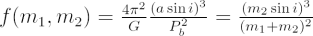

When looking at binary systems in astronomy, we sometimes only possess information about the orbit of one component of the system. This is because there are often rather large luminosity differences between the components of a binary system, either because of extreme mass ratios and hence luminosities, or because one component is a stellar remnant such as a white dwarf, neutron star or black hole. Sometimes a source detected in the radio or X-ray wavelength regime has a poorly known position and the companion cannot be unambiguously identified. In the case of these single-line spectroscopic binaries or binary radio or X-ray pulsars, we can only accurately measure the orbital period Pb, and projected semi-major axis a sin i of one star.
By combining Newton’s laws of gravitation and motion we can still calculate a handy quantity f(m1,m2) known as the mass function.

Here m1 and m2 are the masses of the star and companion respectively, G is Newton’s gravitational constant and i is the inclination angle of the binary (defined so i=90 deg is edge on).
The mass function has the units of mass, and is the minimum mass of the companion should the star for which we have orbital information be a test particle (or effectively massless). When additional information is available about the mass of the star with the orbital information, more accurate estimates of the companion mass can be obtained.